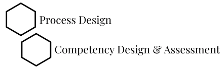

"Modern day organizations are constantly changing, evolving and adapting."
This persistent transformation has been driven by a young and dynamic workforce. State of the art businesses are becoming leaner and more agile, and effective leadership has become the fulcrum for this change. With flatter organisations, leadership is no longer an expectation from hierarchy, it is now a prerogative of each individual employee. The workforce is striving for multidimensional growth and organisations need to continuously invest in the development of employees to navigate this evolving paradigm. Spinach is the refreshing nourishment designed to spin up a transformative advantage for your organisation. Find out how!
ABOUT US
Growing up, we were all fascinated by a certain cartoon sailor-man, Popeye and his anecdotes with spinach. How congruent it is in modern economic world, that every organisation direly needs nourishment to foster growth. Spinach aspires to be the miraculous ingredient in the recipe for transformation.
Spinach offers you focused solutions and fresh perspectives to help nourish a strong team of leaders. Our solutions are a blend of relevant development interventions that are result oriented and impact focused. Through this, we aim to enable individuals to practice key organisational skills such as leadership and effective communication.
In an age where career progressions are akin to mountainous expeditions, we intend to aid individuals traverse the organisational landscape successfully.
OUR OFFERINGS
Corporate Development Programs
Leadership Coaching
L&D Process Consulting
I. Corporate Development Programs

1a. Personal Effective Training
"When you invest to make people more effective, processes becomes more effective."

Growth Mindset
"Transition from 'Ican't do it' I can!"
This is a square image. Add the "circle" class to it to make it appear circular.
Change Management
"From change agent to chnage leader."
This is a square image. Add the "circle" class to it to make it appear circular.
Imapactful Communication
"Speak more with lesser words."
This is a square image. Add the "circle" class to it to make it appear circular.
Problem Solving
"Move from managing asks to managing self."
This is a square image. Add the "circle" class to it to make it appear circular.
Build personal Brand
"Let your brand speak for you."
2. Leadership Developement
"Empowering leadership in people will power them to reach greater heights."
New Manager Transition
"Scale up from up bringing the best out of yourself to bringing the best out of your team."
Learn how you can motivate nd lead teams across obstacles nd empower them to reach personal and professional goals.
High potential program
"Ready your leadershippipeline with ease."
Learn to effectively manage high potential assets and transform them to leaders of tomorrow.

Mid Management Program
"Refesh your leadership ideas in an ever changing and dynamic economy."
Whether your are chaning sectors or resuming your leadership role after pause, effectively adapt and revitalize your skills to best fit your role.
Senior Leadership Transition
"Scale up your skills to manage more with less."
Transition from leading individuals to teams and departments by mastering effective decision making and management on a large scale of operation.
3. Coaching Skills
"Push your leaders beyond the realm, to inspirational growth coaches."
Growth Mindset
"Transition from 'Ican't do it' I can!"
This is a square image. Add the "circle" class to it to make it appear circular.
Change Management
"From change agent to chnage leader."
This is a square image. Add the "circle" class to it to make it appear circular.
Imapactful Communication
"Speak more with lesser words."
This is a square image. Add the "circle" class to it to make it appear circular.
Problem Solving
"Move from managing asks to managing self."
This is a square image. Add the "circle" class to it to make it appear circular.
Build personal Brand
"Let your brand speak for you."
III. Learning Process Desing
Competency Frameworks enable organisations to keep their efforts incisive and in turn helps build a great culture. We help you design competency frameworks for the entire hierarchy, spanning from individual functions to geography specific requirements. We shall deliver a blueprint that is simple to understand and implement, thereby seamlessly integrating it into your workplace culture.
Our technology solution aims to enrichen growth curves across personal and professional competencies and thus solidify the talent pipeline. This is quintessential to the success of any organisation. Spinach Learn can help you foster an environment where people practices are aligned with business objectives.
AT A GLANCE
-
1. Is this Spinach coaching program for you?
If you are a successful professional but feel plateaued and are looking for that inflection point in your career or are mid-senior leader who is looking for bigger role or a complete career shift., the Spinach coaching engagement is an absolute essential catalyst for your growth in the aspired areas of development
-
2. The Spinach advantage?
a) Coaching is widely prevalent in western countries like US, UK etc. In India, it is still largely a privilege reserved for the CXO’s of large organisations.
b) Spinach drives young leadership by bringing the perks of coaching to the passionate, young and fresh spirited.
c) Spinach helps the new age organisations traverse the dynamic leadership landscape by focusing on leaders with 10 – 15 years of experience who are looking for career transitions and upscaling their roles in the existing organisation.
-
3. What is our approach?
Habits are a manifestation of deep beliefs and thought processes. The way we approach a problem is also a habit. With our coaching style based on Neuroscience, we work on creating new thinking habits that will empower you to feel unstuck.
-
4. What can we expect from a coaching session?
Our clients feel they are in a safe, non-judgmental environment where they can talk freely. A good coaching requires empowering the coachee to develop their own strengths, beliefs and personal attributes - this is exactly what we do best! We can help you get unstuck and relook at your current situation, enabling you to handle new problems or ambiguity with ease.
-
5. What does our Coaching engagement entail?
a) The structure of a coaching engagement entails defining and working towards achieving 3-4 goals for an individual over a period of 3-6 months.
b) These goals can emerge from an individual’s growth discussion, development feedback or career aspiration.
c) A coaching session is usually between 60-90 minutes and can happen in person or virtually.
d) A coaching engagement typically follows a 12-session structure, which could vary depending on the mutual agreement of the coach and the client.
-
6. How will Spinach impact my organisation?
a) Dynamic organisations have a need to accelerate growth curve for their leaders and are constantly looking for ways to develop them.
b) Coaching is a personalised intervention and can help these leaders make significant leap in their individual growth areas than stand-alone workshops.
c) Coaching programs also work wonders on high potential employees by developing them for future roles.
-
7. Why should I choose Spinach coaching program?
We understand that coaching is effective only when there is a connect and trust between the coach and the client. To ease the process, we do a demo session for all our clients, before they commit to a complete coaching engagement. This gives both the coach and the client to assess the mutual fit. Talk to us to know more about it.